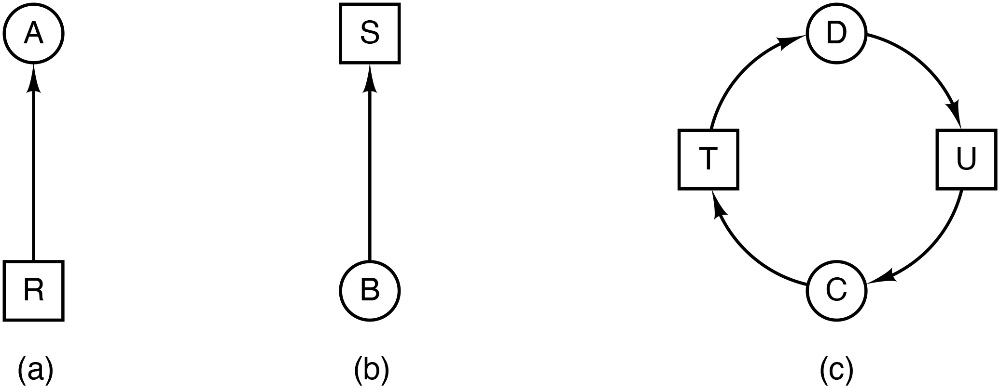
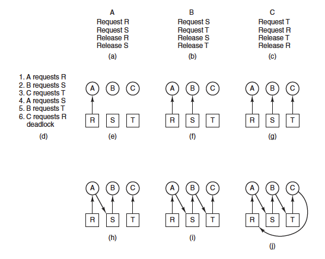
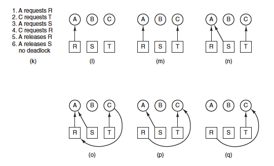
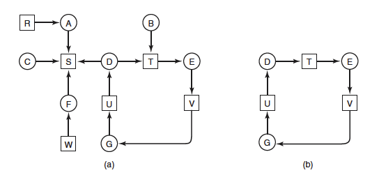
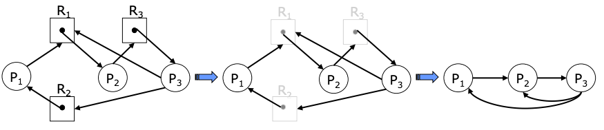

Interbloqueig
Unitat 5 · Sistemes Operatius (SO)
Contextualització
El sistemes informàtics estan formats per molts recursos que poden ser utilitzats per un o més processos a la vegada.
Imagineu 2 processos al mateix temps:
- Situació 1: escrivint a la impressora → El resultat seria un text sense sentit.
- Situació 2: utilitzant la mateixa ranura de la taula del sistema de fitxers → El resultat seria un sistema de fitxers corrupte.
El sistema operatiu és l’encarregat de gestionar aquests recursos i garantir que no hi hagi conflictes entre els processos que els utilitzen. Per tant, poden concedir (temporalment) a un procés l’accés exclusiu a certs recursos.
Creació d’un fitxer
Suposem que un procés (A) està creant un nou fitxer.
- El procés A necessita accedir a la taula del sistema de fitxers per crear una nova entrada per al nou fitxer. Aquesta entrada conté informació sobre el fitxer, com ara el seu nom, la seva mida i els permisos d’accés.
- El procés A necessita accés exclusiu a la ranura per al nou fitxer per poder crear l’entrada correcta.
- Si un procés B intentés crear un fitxer amb el mateix nom al mateix temps, el sistema operatiu bloquejaria el procés B fins que el procés A finalitzi la creació del nou fitxer.
Aquesta és una manera de garantir que la informació del sistema de fitxers sigui precisa i consistent.
Problemes amb recursos compartits
Suposem l’escenari on tenim dos processos (A i B): Els dos processos tenen la finalitat de grabar un document escanejat en una memòria USB montada a /mnt/USB.
- El procés A demana permís per utilitzar l’escaner i se li concedeix.
- El procés B demana permís per utilitzar la memòria USB i se li concedeix.
- El procés A demana permís per utilitzar la memòria USB, però la petició queda suspesa fins que el procés B alliberi la memòria USB.
- Desafortunadament,en lloc d’alliberar la memòria USB, el procés B demana permís per utilitzar l’escàner.
- En aquest punt, els dos processos estan bloquejats i ho seguiran per sempre.
Què és un interbloqueig?
Un interbloqueig és una situació en la qual dos o més processos queden bloquejats. Cada un d’ells espera que l’altre acabi la seva tasca per poder continuar. Aquesta situació pot ser causada per l’ús de recursos compartits.
Els interbloquejos poden produir-se en qualsevol sistema en què hi hagi recursos compartits.
- En un sistema de gestió de bases de dades, dos processos poden estar intentant actualitzar la mateixa fila d’una taula.
- En un sistema de jocs en línia, dos jugadors poden estar intentant utilitzar el mateix recurs, com ara una arma o una habilitat.
- En un sistema de fabricació, dues màquines poden estar esperant que una tercera màquina alliberi un recurs, com ara una peça o una eina.
Problema dels filosofs menjant
Imagina 5 filòsofs asseguts al voltant d’una taula circular. On cada filòsof pensa i menja de manera cíclica. Si el filòsof vol menjar, necessita agafar els dos coberts que té al costat.
- Hi ha 5 filòsofs i 5 coberts.
- Cada filòsof comparteix els coberts amb els seus veïns.
- Tots els filòsofs necessiten dos recursos simultàniament per menjar.
- Els filòsofs no poden arrencar els coberts dels altres filòsofs (no apropiatius).
- Si tots els filòsofs agafen el cobert de la dreta alhora, es produeix un interbloqueig.
Això és equivalent a processos que necessiten dos recursos exclusius per continuar.
Recursos apropiatius i no apropiatius
- Apropiatiu: el SO pot retirar-lo temporalment d’un procés sense comprometre’n la coherència.
- No apropiatiu: un cop el procés l’ha adquirit, no es pot retirar fins que l’allibera.
La distinció no depèn del recurs en si, sinó de com el sistema operatiu està implementat.
- Un recurs no és inherentment apropiatiu o no apropiatiu.
- Depèn de si el SO té mecanismes per guardar i restaurar el seu estat.
- Si l’estat del recurs és fàcilment salvable → pot ser apropiatiu
Exemples apropiatius / no apropiatius
- CPU: Apropiatiu. El SO pot interrompre un procés (interrupt), guardar-ne l’estat (PCB) i continuar més tard → es pot expropiar sense problemes.
- Memòria:
- Apropiativa en sistemes amb swapping o paginació → el SO pot copiar pàgines al disc i recuperar-les després.
- No apropiativa en sistemes sense swapping(android) → no es pot retirar memòria d’un procés de manera segura → pot causar pèrdua d’estat.
- Dispositius d’E/S:
- No apropiatius: Impressores, discos durs → no es pot interrompre una operació d’escriptura sense perdre dades.
- Apropiatius: Dispositius amb búfers → el SO pot desar dades en un búfer i continuar més tard.
Gestió de la sol·licitud de recursos
En alguns sistemes, quan un recurs no està disponible, el procés es bloqueja fins que el recurs torni a estar disponible. En altres sistemes, la petició pot fallar amb un codi d’error, transferint la responsabilitat al procés per gestionar la situació de petició fallida i intentar novament obtenir el recurs després d’un temps determinat.
Normalment, un procés utilitza un bucle de petició de recurs, dormir, nova petició de recurs, dormir, etc. Aquesta tècnica és coneguda com a polling. El procés no es bloqueja, però tampoc pot realitzar cap acció fins que el recurs estigui disponible.
La manera exacta de sol·licitar un recurs depèn en gran mesura del sistema. En alguns sistemes, es proporciona una crida de sistema de petició que permet als processos sol·licitar explícitament recursos. En altres, els únics recursos que el sistema operatiu coneix són fitxers especials que només un procés pot tenir oberts a la vegada. Aquests s’obtenen mitjançant la crida open. Si el fitxer ja està en ús, el procés queda bloquejat fins que l’actual propietari el tanca.
Condicions de Coffman (I)
Les condicions perquè es produeixi un interbloqueig de recursos, com van ser presentades per Coffman et al. (1971), són les següents:
- Condició d’exclusió mútua: Cada recurs pot ser assignat a un únic procés.
- Condició (Mantenir i Esperar): Un procés que té recursos assignats previament pot sol·licitar nous recursos.
- Condició (No apropiació): Els recursos concedits prèviament no es poden prendre de manera forçada d’un procés. Han de ser alliberats explícitament pel procés que els té.
- Condició d’Espera Circular: Ha d’existir una llista circular de dos o més processos, cadascun dels quals espera un recurs que té el següent membre de la cadena.
Exclusió mútua
Si tots els recursos fossin compartibles simultàniament (no exclusius), cap procés hauria d’esperar: múltiples processos podrien usar el mateix recurs alhora i per tant no s’origina la situació d’un procés esperant indefinidament. Com que sí hi ha deadlock, existeixen recursos que només poden ser ocupats per un procés alhora.
Condició Mantenir i Esperar
En un deadlock hi ha processos que ja tenen alguns recursos i alhora estan esperant altres recursos. Si cap procés tingués recursos mentre esperava (és a dir, si primer haguessin de sol·licitar tots els recursos a l’inici), llavors no podria donar-se la situació en què un procés retenint recursos impedeix que un altre progressi. Perquè el conjunt \(D\) estigui bloquejat, cada procés \(P_i\) reté almenys un recurs i espera al menys un recurs addicional; així s’està complint mantenir i esperar.
Condició No apropiació
Si els recursos poguessin ser forçosament recuperats (apropiació), el plan de recuperació podria prendre un recurs d’un procés bloquejat i donar-lo al que el necessita, trencant el deadlock. Perquè el deadlock persisteixi indefinidament, no es poden apropiar recursos de manera forçada; els recursos només s’alliberen voluntàriament pels processos. Per tant, la no apropiació ha de ser certa en la situació de deadlock.
Condició d’Espera Circular
Perquè hi hagi un deadlock, cal que hi hagi una dependència circular entre els processos bloquejats. Cada procés dins del conjunt bloquejat \(D\) espera un recurs que és posseït per un altre procés dins de \(D\). Seguint aquestes dependències, s’arriba de nou al primer procés, formant un cicle. Aquesta situació és coneguda com a espera circular. Sense aquest cicle, hi hauria algun procés que podria ser satisfet i desbloquejar la resta. Per tant, per a que hi hagi deadlock, la condició d’espera circular ha de ser certa.
Condicions de Coffman (II)
Aquestes condicions estan relacionades amb una política que un sistema pot tenir o no. Pot assignar-se un recurs determinat a més d’un procés alhora? Pot un procés mantenir un recurs i sol·licitar-ne un altre? Poden els recursos ser apropiats? Poden existir esperes circulars?
Totes quatre condicions han de ser presents perquè es produeixi un bloqueig de recursos. Si n’hi ha una que està absent, no és possible un bloqueig de recursos.
Les 4 condicions són necessàries però no sempre suficients per a un interbloqueig.
Graf d’assignació de recursos
Un graf d’assignació de recursos és un graf dirigit que representa les relacions entre els processos i els recursos en un sistema. Els nodes del graf representen els processos i els recursos, i les arestes del graf representen les peticions de recursos.

- Processos: Nodes (Circulars) del graf \(P_1, P_2, \ldots, P_n\)
- Recursos: Nodes (Rectangulars) del graf \(R_1, R_2, \ldots, R_m\)
- Instancies de recursos: Nodes (Rectangulars) del graf \(R_1^1, R_1^2, \ldots, R_1^{n_1}, R_2^1, R_2^2, \ldots, R_2^{n_2}, \ldots, R_m^1, R_m^2, \ldots, R_m^{n_m}\)
- Peticions de recursos: Arestes del graf \(P_i \rightarrow R_j\)
- Assignacions de recursos: Arestes del graf \(R_j \rightarrow P_i\)
Exemples de modelització de recursos (Causa Interbloqueig)

Exemples de modelització de recursos (Evitar Interbloqueig)

Estratègies per prevenir interbloquejos (I)
- Ignorar el problema: Aquesta és una opció que generalment no es recomana, ja que pot conduir a conseqüències negatives. No prendre accions pot resultar en un estancament permanent del sistema.
- Detectar i Recuperar:
- Algorisme de detecció: Utilitzar un algorisme de detecció de bloqueig: Implementar un sistema que monitoritzi l’ús dels recursos i detecti quan hi ha un potencial bloqueig.
- Algorisme de recuperació: Desenvolupar un procediment per alliberar els recursos del bloqueig i permetre la continuació del sistema. Això podria incloure la revocació de recursos o la reorganització de les prioritats.
Estratègies per prevenir interbloquejos (II)
- Evitar el Bloqueig de Forma Dinàmica: Implementar un algorisme predictiu: Desenvolupar un sistema que pugui preveure si l’assignació de recursos sol·licitada podria conduir a un bloqueig. Això permetrà prendre mesures abans que el problema esdevingui crític.
- Evitar les condicions de Coffman: Analitzar les condicions de Coffman, com l’exclusió mútua, la posada en espera circular i l’espera indefinida, i prendre mesures per assegurar que aquestes condicions (o alguna) mai es compleixin.
Algorisme Ostrich
La manera més senzilla d’evitar els interbloquejos és l’algorisme de l’estruç: posar el cap sota la sorra i fingir que no hi ha cap problema.
- Els matemàtics diuen que aquesta estratègia és inacceptable i que els interbloquejos s’han d’evitar a tota costa.
- Els enginyers pregunten amb quina freqüència es produeix el problema, amb quina freqüència el sistema es bloqueja per altres motius i quan és greu un interbloqueig. Abans de prendre mesures per evitar els interbloquejos, els enginyers volen saber si el problema és greu.
Algorisme Ostrich (II)
Imagina un sistema operatiu que no detecta els interbloquejos. Si un interbloqueig es produeix una vegada cada 10 anys, el sistema operatiu no hauria de preocupar-se per aquest problema. Si un interbloqueig es produeix una vegada cada 10 minuts, el sistema operatiu hauria de prendre mesures per evitar-lo.
Si un procés obté el recurs d’un USB i un altre obra la impressora i després cada procés intenta obrir el recurs de l’altre i es bloqueja, tenim un interbloqueig. Pocs sistemes actuals detectaran això.
Prevenir interbloquejos
- Exclusió mútua: Fer un spooling de tots els recursos. Mou el problema a un altre lloc.
- Aplicar de forma selectiva prioritzant els recursos crítics.
- Mantenir i Esperar: Els processos demanen tots els recursos que necessiten al principi. No es pot predir quants recursos necessitarà un procés. A més a més, redueix el paral·lelisme i el rendiment.
- Ajustar dinàmicament les peticions segons les necessitats.
- No apropiació: Recursos apropiatius. No es pot aplicar a tots els recursos.
- Espera Circular: Ordenar les peticions de recursos. Molt dificil de fer.
- Implementar algorismes de gestió de recursos per minimizar les esperes circulars.
Spooling: Tècnica de gestió de recursos que consisteix en fer una cua de peticions de recursos. Aquesta tècnica es pot aplicar a qualsevol recurs, però és més comuna en els dispositius d’entrada/sortida.
Detecció & 1 recurs de cada tipus
Assumirem que hi ha un únic recurs de cada tipus. Això significa que només hi ha una instància de cada recurs. Per aquest sistemes, podem utilitzar un graf d’assignació de recursos per determinar si hi ha un interbloqueig. Si hi ha un cicle, existeix un interbloqueig, i qualsevol procés del cicle es troba involucrat. En canvi, si no existeix cap cicle, no hi ha interbloqueig.
- \(A\) té el recurs R i vol el recurs S.
- \(B\) vol el recurs T.
- \(C\) no té cap recurs i vol el recurs S.
- \(D\) té el recurs U i vol els recursos S i T.
- \(E\) té el recurs T i vol el recurs V.
- \(F\) té el recurs W i vol el recurs S.
- \(G\) té el recurs V i vol el recurs U.

Existeix un interbloqueig? Quins processos estan involucrats?
1 cicle → Interbloqueig. Els processos involucrats són: \(D\), \(E\), \(G\).
Algorisme de detecció & 1 recurs
def detectar_cicle(NodeActual, LlistaArcs, L):
Afegir NodeActual al final de L
# Si el NodeActual ja era al camí → hem format un cicle
si L.count(NodeActual) > 1:
Imprimir "El graf conté un cicle: ", L
Finalitzar l'algorisme
# Obtenir arcs de sortida no marcats
ArcsNoMarcats = [arc per arc en LlistaArcs
si arc.origen == NodeActual i no arc.marcat]
si ArcsNoMarcats != []:
# Seleccionar un arc i baixar al node destí
arc = Seleccionar_Arc_Atzar(ArcsNoMarcats)
arc.marcat = True
NodeSeguent = arc.desti
detectar_cicle(NodeSeguent, LlistaArcs, L)
sinó:
# No hi ha més arcs: cal retrocedir
# Retirem el NodeActual del camí i tornem enrere
L.pop()
si L == []:
Imprimir "El subgraf explorat no conté cicles"
retornar
NodeAnterior = L[-1]
detectar_cicle(NodeAnterior, LlistaArcs, L)Exemple d’execució de l’algorisme (I)
Assumeix que tenim un graf dirigit amb 4 nodes (A,B,C,D) i 4 arestes (A→B, B→C, C→D, D→A). Si començem amb el Node A com a node inicial:
- Inicialitzem L a [].
- Marquem tots els arcs com a no marcats.
- Executem detectar_cicle(A, LlistaArcs, [A]).
- Dins de detectar_cicle amb NodeActual = A:
- No hi ha cicles ja que A no apareix dues vegades a L.
- Seleccionem l’arc (A, B) i el marquem.
- Anem al node B, i tornem a executar detectar_cicle(B, LlistaArcs, [A, B]).
- Dins de detectar_cicle amb NodeActual = B:
- No hi ha cicles ja que B no apareix dues vegades a L.
- Seleccionem l’arc (B, C) i el marquem.
- Anem al node C, i tornem a executar detectar_cicle(C, LlistaArcs, [A, B, C]).
Exemple d’execució de l’algorisme (II)
- Dins de detectar_cicle amb NodeActual = C:
- No hi ha cicles ja que C no apareix dues vegades a L.
- Seleccionem l’arc (C, D) i el marquem.
- Anem al node D, i tornem a executar detectar_cicle(D, LlistaArcs, [A, B, C, D]).
- Dins de detectar_cicle amb NodeActual = D:
- No hi ha cicles ja que D no apareix dues vegades a L.
- Seleccionem l’arc (D, A) i el marquem.
- Anem al node A, i tornem a executar detectar_cicle(A, LlistaArcs, [A, B, C, D, A]).
- Dins de detectar_cicle amb NodeActual = A:
- Afegim A a L, ara L és [A, B, C, D, A].
- Aquesta vegada A apareix dues vegades a L, indicant que hi ha un cicle.
- Imprimim El graf conté un cicle: [A, B, C, D, A] i finalitzem l’algorisme.
Consideracions sobre l’algorisme
- Aquest algorisme no és eficient, ja que pot haver-hi molts camins per explorar.
- Aquest algorisme només funciona per sistemes amb un únic recurs de cada tipus. Per sistemes amb múltiples instàncies de cada recurs, caldria utilitzar un altre algorisme.
- Hi ha altres algorismes més eficients per detectar cicles en un graf dirigit, com ara l’algorisme de Tarjan. Tarjan: Mitjançant un recorregut en profunditat (DFS), assigna números de baixada i d’arribada als nodes i actualitza els valors low que indiquen el número de baixada més petit accessible des del subarbre d’un node, incloent les arestes de retrocés. Quan es troba un cicle, els nodes del cicle tenen els mateixos valors de número de baixada i low, revelant components fortes. Aquesta informació jeràrquica ajuda a identificar de manera eficient les relacions de dependència entre els nodes del graf.
Graf d’espera
Un graf d’espera es construeix a partir d’un graf d’assignació de recursos. Els nodes del graf d’espera són els processos, i les arestes són les peticions de recursos. Una aresta del graf d’espera indica que el procés que es troba a l’origen de l’aresta està esperant un recurs que té el procés que es troba al final de l’aresta.
- Eliminar tots els nodes corresponents als recursos.
- Ajustar els arcs perquè apuntin als processos en lloc dels recursos.

Si el graf d’espera conté un cicle, hi ha un interbloqueig.
Detecció & graf d’espera
Si creem una matriu \(A\) de mida \(N \times N\) on \(N\) és el nombre de processos, i \(A_{ij}\) és el nombre d’arestes del graf d’espera que connecten el procés \(P_i\) amb el procés \(P_j\), podem utilitzar aquesta matriu per detectar interbloquejos.
Per fer-ho, inicialitzarem \(A\) a 0. Si existeix un arc del procés \(P_i\) al procés \(P_j\), incrementarem \(A_{ij}\) en 1. Multipliquem la matriu \(A\) per ella mateixa: \(A^k = A^{k-1} \times A\). Aquesta operació es pot realitzar de manera eficient utilitzant l’algorisme de Strassen. Si apareix un nombre diferent a 0 a la diagonal de la matriu \(A^k\), hi ha un interbloqueig.
\[ A = \begin{bmatrix} 0 & 1 & 0 \\ 0 & 0 & 1 \\ 1 & 1 & 0 \\ \end{bmatrix} \]
\[ A^2 = A \cdot A = \begin{bmatrix} 0 & 0 & 1 \\ 1 & 1 & 0 \\ 0 & 1 & 1 \\ \end{bmatrix} \]
P2 i P3 tenen un interbloqueig de longitud 2.
\[ A^3 = A \cdot A^2 = \begin{bmatrix} 1 & 1 & 0 \\ 0 & 1 & 1 \\ 1 & 1 & 1 \\ \end{bmatrix} \]
P1,P2 i P3 tenen un interbloqueig de longitud 3.
Detecció & M recursos de cada tipus (I)
Assumirem:
- \(n\) processos \(P_1, P_2, \ldots, P_n\).
- \(m\) recursos de diferents tipus \(R_1, R_2, \ldots, R_m\).
- Cada recurs \(R_i\) té \(e\) instàncies \(R_i^{1}, R_i^{2}, \ldots, R_i^{e}\).
Definirem:
- \(A\) és un vector que representa la disponibilitat de recursos, on \(A_j\) és el nombre d’instàncies disponibles del recurs \(R_j\).
- \(C\) és una matriu que representa l’estat del sistema, on \(C_{ij}\) és el nombre d’instàncies del recurs \(R_j\) que estan assignades al procés \(P_i\).
- \(R\) és una matriu que representa les peticions de recursos, on \(R_{ij}\) és el nombre d’instàncies del recurs \(R_j\) que el procés \(P_i\) està sol·licitant.
- \(E\) és un vector que representa el nombre total d’instàncies de cada recurs, on \(E_i\) és el nombre total d’instàncies del recurs \(R_i\).
Detecció & M recursos de cada tipus (II)
Definirem la disponibilitat de recursos es pot calcular com \(A_j = E_j - \sum_{i=0}^{n}C_{ij}\).
Si \(R_{ij} > A_j\), el procés \(P_i\) no pot obtenir el recurs \(R_j\) i es bloqueja.

Algorisme detecció M recursos
L’algorisme de detecció d’interbloquejos es basa en la comparació de vectors. Definirem la relació \(A \leq B\) en dos vectors \(A\) i \(B\) per indicar que cada element de \(A\) és menor o igual que el corresponent element de \(B\). Matemàticament, \(A \leq B\) es compleix si i només si \(A_i \leq B_i\) per a tots els valors de \(i\) entre 1 i \(m\) (\(1 \leq i \leq m\)).
- Cada procés es considera inicialment no marcat.
- Buscar un procés no marcat, \(P_i\), per al qual la fila \(i\)-èssima de \(R\) sigui menor o igual a \(A\) (és a dir, \(R_i \leq A\)).
- Si es troba un procés com aquest, sumar la fila \(i\)-èssima de \(C\) a \(A\) (és a dir, \(A = A + C_i\)), marcar el procés i tornar a 2.
- Si no existeix cap procés com aquest, l’algorisme finalitza.
- Quan l’algorisme finalitza, qualsevol procés no marcat es coneix com interbloquejat.
Aquest algorisme assumeix un escenari de pitjor cas: tots els processos mantenen tots els recursos adquirits fins que surten.
Exemple d’execució (I)
\[ A = \begin{bmatrix} 2 & 1 & 0 & 0 \end{bmatrix} \]
\[ E = \begin{bmatrix} 4 & 2 & 3 & 1 \end{bmatrix} \]
\[ C = \begin{bmatrix} 0 & 0 & 1 & 0 \\ 2 & 0 & 0 & 1 \\ 0 & 1 & 2 & 0 \\ \end{bmatrix} \]
\[ R = \begin{bmatrix} 2 & 0 & 0 & 1 \\ 1 & 0 & 1 & 0 \\ 2 & 1 & 0 & 0 \\ \end{bmatrix} \]
- Pas 1: Buscar un procés que es pugui satisfer totes les seves sol·licituts.
- \(P1\) no es pot satisfer ja que sol·licita 1 instancia de \(R4\) i no ni ha cap disponible.
- \(P2\) no es pot satifer ja que sol·licita 1 instancia de \(R3\) i no ni ha cap disponible.
- \(P3\) es pot satisfer ja que sol·licita 2 instancies de \(R1\) i 1 de \(R2\) i aquestes estan disponibles a \(A\).
Exemple d’execució (I)
\[ A = \begin{bmatrix} 2 & 1 & 0 & 0 \end{bmatrix} \]
\[ E = \begin{bmatrix} 4 & 2 & 3 & 1 \end{bmatrix} \]
\[ C = \begin{bmatrix} 0 & 0 & 1 & 0 \\ 2 & 0 & 0 & 1 \\ 0 & 1 & 2 & 0 \\ \end{bmatrix} \]
\[ R = \begin{bmatrix} 2 & 0 & 0 & 1 \\ 1 & 0 & 1 & 0 \\ 2 & 1 & 0 & 0 \\ \end{bmatrix} \]
- Pas 2: Sumar la fila \(i\)-èssima de \(C\) a \(A\).
- \(A = A + C_3 = [2,1,0,0] + [0,1,2,0] = [2,2,2,0]\)
- Marquem el procés \(P3\). En aquest moment, \(P3\) pot finalitzar i alliberar els recursos que té assignats. \(A = [4,3,2,0]\)
Amb aquests recursos alliberats, podem satisfer les sol·licituds de \(P1\) i \(P2\). Per tant no hi ha interbloqueig. Si \(P3\) hagués sol·licitat 1 instacia de \(R4\) llavors no es podria satisfer cap sol·licitud i tindríem un interbloqueig.
Quan s’ha de fer la detecció d’interbloquejos?
Ara que sabem com detectar interbloquejos, assumint que coneixem amb antelació la sol·licitud de recursos (estàtic), la pregunta és quan hauríem de buscar-los.
Una possibilitat és comprovar-ho cada vegada que es fa una sol·licitud de recursos. Això assegura detectar-los tan aviat com sigui possible, però pot ser potencialment costos en termes de temps de CPU. → Sobrecàrrega del sistema.
Una estratègia alternativa és comprovar-ho cada k minuts, o quan la utilització de la CPU hagi baixat per sota d’un cert llindar \(\theta\). → Pot ser que no es detectin interbloquejos immediatament, si existeixen cicles diferents, pot ser difícil determinar quin procés està involucrat en cada cicle.
La raó per considerar la utilització de la CPU és que si suficients processos estan interbloquejats, hi haurà pocs processos executables, i la CPU sovint estarà inactiva.
Recuperació d’interbloquejos
Suposeu que un sistema operatiu detecta un interbloqueig. Què hauria de fer el sistema operatiu? Hi ha dues possibilitats:
- Recuperació manual: El sistema operatiu pot demanar a l’usuari que seleccioni un procés per finalitzar-lo. Això alliberarà els recursos que el procés té assignats i permetrà que altres processos continuïn.
- Recuperació automàtica: El sistema operatiu pot seleccionar un procés per finalitzar-lo. Això alliberarà els recursos que el procés té assignats i permetrà que altres processos continuïn.
Recuperació amb apropiació (I)
La recuperació amb apropiació de recursos és una tècnica que permet prendre temporalment un recurs d’un procés, permetre que un altre procés el faci servir i després tornar-lo al procés original sense que aquest se’n adoni. No obstant això, aquesta capacitat de recuperació depèn en gran mesura de la naturalesa específica del recurs.
Metàfora: Imaginem que tenim una impressora compartida entre diversos usuaris. Un usuari està realitzant una gran tasca d’impressió, mentre que un altre usuari necessita imprimir un document urgent. El sistema operatiu pot prendre temporalment la impressora del primer usuari i donar-la al segon usuari. Quan el segon usuari acabi d’imprimir, el sistema operatiu pot tornar la impressora al primer usuari.
A la realitat la impressora no es pot apropiar d’un usuari a un altre sense que l’usuari original se n’adoni.
Recuperació amb apropiació (II)
- Recuperar amb aquesta tècnica és complex. No sempre és senzill determinar quin procés és el més adequat per ser suspès i si aquesta tècnica és aplicable depèn de la naturalesa específica del recurs i del context de la situació.
- Podria comportar inanició. Si un procés és suspès repetidament, pot ser que mai pugui completar la seva tasca.
Recuperació per rollback
La recuperació per rollback es basa en l’ús de checkpoints.
- Un checkpoint és un punt en el temps en què es guarda l’estat d’un procés. Per exemple, es pot guardar en un fitxer l’estat d’un procés (memòria, recursos asignats,…) en un moment determinat.
- Un rollback és una operació que restaura l’estat d’un procés a un punt anterior en el temps.
Quan es detecta un interbloqueig, s’observen els recursos necessaris i es selecciona un procés que els tingui assignats. A continuació, es realitza un rollback d’aquest procés a un punt anterior en el temps, abans que adquirís els recursos. Això allibera els recursos i permet que altres processos els utilitzin.
Es perden totes les instruccions executades des del checkpoint, ja que el procés es reinicia a un estat anterior.
Recuperació per finalització de processos
La manera més simple de recuperar-se d’un interbloqueig és finalitzar un procés. Això alliberarà els recursos que el procés té assignats i permetrà que altres processos continuïn. De forma dràstica, es pot finalitzar tots els processos que estan involucrats en el cicle d’interbloqueig.
- Selecció de Processos en el Cicle: S’ha de seleccionar un dels processos involucrats en el cicle i finalitzar-lo. Aquest procés pot ser reinitiat després per evitar l’interbloqueig.
- Finalització de Processos Amb Recursos Necessaris: Finalitzar un procés que tingui recursos assignats que necessitin els processos del cicle, encara que el procés no estigui directament involucrat en el cicle.
En aquesta selecció es pot tenir en compte la prioritat dels processos, el temps que porten en execució, el nombre de recursos que tenen assignats, etc.
Evitar interbloquejos
La evitació dels interbloquejos es basa en dos algorismes. L’agorisme del banquer proposat per Dijkstra i l’algorisme de seguretat proposat per Coffman.
- Estat segur: Un estat és segur si hi ha una manera de que tots els processos puguin finalitzar amb èxit sense que es produeixi un interbloqueig.
- Seqüencia segura: Una seqüència de processos \(P_1, P_2, \ldots, P_n\) és una seqüència segura si el procés \(P_i\) pot satisfer les seves sol·licituds de recursos i finalitzar amb èxit després de la finalització del procés \(P_{i-1}\), per a tots els valors de \(i\) entre 1 i \(n\) (\(1 \leq i \leq n\)).
- Estat insegur: Un estat és insegur si no és segur.
Algorisme del banquer per a 1 recurs
L’algorisme del banquer és un algorisme d’evitació d’interbloquejos que es basa en la idea de prevenir-los. Aquest algorisme es basa en el fet que si un sistema es troba en un estat segur, no es produirà un interbloqueig.
- El processos (clients) sol·liciten recursos (diners).
- El sistema operatiu (banquer) únicament concedeix els recursos si comporten un estat segur.
- Les demandes màximes de recursos (crèdits) són conegudes amb antelació.
Exemple - Banquer & 1 recurs
\[ \begin{bmatrix} & Assignat & Max \\ A & 0 & 6 \\ B & 0 & 5 \\ C & 0 & 4 \\ D & 0 & 7 \\ \end{bmatrix} \]
Si hi ha diponibles 10 recursos. Estat segur, tots poden finalitzar amb èxit.
\[ \begin{bmatrix} & Assignat & Max \\ A & 1 & 6 \\ B & 1 & 5 \\ C & 2 & 4 \\ D & 4 & 7 \\ \end{bmatrix} \]
Si hi ha diponibles 2 recursos. Estat segur, C primer i després la resta.
\[ \begin{bmatrix} & Assignat & Max \\ A & 1 & 6 \\ B & 2 & 5 \\ C & 2 & 4 \\ D & 4 & 7 \\ \end{bmatrix} \]
Si hi ha diponibles 1 recurs. Estat insegur, ningú pot acabar.
Algorisme del banquer per a \(M\) recursos
L’algorisme del banquer es pot generalitzar per a sistemes amb múltiples recursos de cada tipus. En aquest cas, el sistema operatiu ha de mantenir una matriu \(A\) de mida \(M \times N\) on \(M\) és el nombre de recursos i \(N\) és el nombre de processos. Els elements de la matriu \(A_{ij}\) indiquen el nombre d’instàncies del recurs \(R_i\) que el procés \(P_j\) té assignades.
- Seleccioneu un procés \(P_i\) que no s’hagi finalitzat i que tingui una demanda màxima \(R_i\) que sigui menor o igual a \(A\).
- Marqueu el procés \(P_i\) i afegiu la fila \(i\)-èssima de \(C\) a \(A\).
- Repeteix els passos fins acabar en un (estat segur) o un (estat insegur).
Algorisme del banquer
procedure banquer(M: integer, N: integer, C: matrix, R: matrix)
// M: nombre de recursos, N: nombre de processos, C: matriu d'estat actual del sistema (disponibilitat dels recursos)
// R: matriu de màxims requerits pels processos
finish: array of boolean of length N // indica si un procés ha finalitzat
work: array of integer of length M // matriu que representa els recursos disponibles
for i := 1 to M do
work[i] := C[0, i] // inicialitzar work amb la disponibilitat actual de recursos
for i := 1 to N do
finish[i] := false // inicialitzar tots els processos com a no finalitzats
repeat
found := false // indica si s'ha trobat un procés adequat en aquesta iteració
for i := 1 to N do
if not finish[i] and all(R[i, j] <= work[j] for j := 1 to M) then
// El procés i no ha finalitzat i la seva demanda és menor o igual als recursos disponibles
for j := 1 to M do
work[j] := work[j] + C[i, j] // alliberar els recursos del procés i
finish[i] := true // marcar el procés com a finalitzat
found := true // indicar que s'ha trobat un procés en aquesta iteració
break
until not found
// Comprovar si tots els processos s'han finalitzat
if all(finish[i] for i := 1 to N) then print("L'estat és segur")
else print("L'estat és insegur")
end procedureExemple - Concesió(I)
\[ Disponible = \begin{bmatrix} R1 & R2 & R3 \\ 3 & 3 & 2 \\ \end{bmatrix} \]
\[ Max = \begin{bmatrix} & R1 & R2 & R3 \\ P1 & 7 & 5 & 3 \\ P2 & 3 & 2 & 2 \\ P3 & 9 & 0 & 2 \\ P4 & 2 & 2 & 2 \\ P5 & 4 & 3 & 3 \\ \end{bmatrix} \]
P1 sol·licita una instància de \(R1\) i dos de \(R3\). Es concediran?
\[ Necessito = \begin{bmatrix} & R1 & R2 & R3 \\ P1 & 7 & 4 & 3 \\ P2 & 0 & 2 & 0 \\ P3 & 6 & 0 & 0 \\ P4 & 0 & 1 & 1 \\ P5 & 4 & 3 & 1 \\ \end{bmatrix} \]
\[ Assignat = \begin{bmatrix} & R1 & R2 & R3 \\ P1 & 0 & 1 & 0 \\ P2 & 3 & 0 & 2 \\ P3 & 3 & 0 & 2 \\ P4 & 2 & 1 & 1 \\ P5 & 0 & 0 & 2 \\ \end{bmatrix} \]
Exemple - Concesió(II)
Pas 1: Comprovació de la sol·licitud
P1 sol·licita 1 instància de R1 i 2 instàncies de R3.
- Solicito[1,0,2] \(\leq\) Disponible [3,3,2].
- Solicito[1,0,2] \(\leq\) Necessito [7,4,3].
Pas 2: Simulació de l’assignació
P1 obté els recursos.
- Disponible = Disponible - Solicito = [2,3,0]
- Assignat = Assignat + Solicito = [1,1,2]
- Necesito = Necesito - Solicito = [6,4,1]
Exemple - Concesió(III)
\[ D = \begin{bmatrix} R1 & R2 & R3 \\ 2 & 3 & 0 \\ \end{bmatrix} \]
\[ N = \begin{bmatrix} & R1 & R2 & R3 \\ P1 & 6 & 4 & 1 \\ P2 & 0 & 2 & 0 \\ P3 & 6 & 0 & 0 \\ P4 & 0 & 1 & 1 \\ P5 & 4 & 3 & 1 \\ \end{bmatrix} \]
\[ A = \begin{bmatrix} & R1 & R2 & R3 \\ P1 & 1 & 1 & 2 \\ P2 & 3 & 0 & 2 \\ P3 & 3 & 0 & 2 \\ P4 & 2 & 1 & 1 \\ P5 & 0 & 0 & 2 \\ \end{bmatrix} \]
- Iteració 1:
- P2: Assignats[3,0,2] i Necessito[0,2,0]. Podeu satisfer P2.
- P2 obté els recursos i els allibera. Disponible = [5,3,2]
Exemple - Concesió(IV)
\[ D = \begin{bmatrix} R1 & R2 & R3 \\ 2 & 3 & 0 \\ \end{bmatrix} \]
\[ N = \begin{bmatrix} & R1 & R2 & R3 \\ P1 & 6 & 4 & 1 \\ P2 & 0 & 2 & 0 \\ P3 & 6 & 0 & 0 \\ P4 & 0 & 1 & 1 \\ P5 & 4 & 3 & 1 \\ \end{bmatrix} \]
\[ A = \begin{bmatrix} & R1 & R2 & R3 \\ P1 & 1 & 1 & 2 \\ P2 & 3 & 0 & 2 \\ P3 & 3 & 0 & 2 \\ P4 & 2 & 1 & 1 \\ P5 & 0 & 0 & 2 \\ \end{bmatrix} \]
- Iteració 2:
- P4: Assignats[2,1,1] i Necessito[0,1,1] Podeu satisfer P4.
- P4 obté els recursos i els allibera. Disponible = [7,4,3]
Exemple - Concesió(V)
\[ D = \begin{bmatrix} R1 & R2 & R3 \\ 2 & 3 & 0 \\ \end{bmatrix} \]
\[ N = \begin{bmatrix} & R1 & R2 & R3 \\ P1 & 6 & 4 & 1 \\ P2 & 0 & 2 & 0 \\ P3 & 6 & 0 & 0 \\ P4 & 0 & 1 & 1 \\ P5 & 4 & 3 & 1 \\ \end{bmatrix} \]
\[ A = \begin{bmatrix} & R1 & R2 & R3 \\ P1 & 1 & 1 & 2 \\ P2 & 3 & 0 & 2 \\ P3 & 3 & 0 & 2 \\ P4 & 2 & 1 & 1 \\ P5 & 0 & 0 & 2 \\ \end{bmatrix} \]
- Iteració 3:
- P3: Assignats[3,0,2] i Necessito[6,0,0]. Podeu satisfer P3.
- P3 obté els recursos i els allibera. Disponible = [10,4,5]
Exemple - Concesió(VI)
\[ D = \begin{bmatrix} R1 & R2 & R3 \\ 2 & 3 & 0 \\ \end{bmatrix} \]
\[ N = \begin{bmatrix} & R1 & R2 & R3 \\ P1 & 6 & 4 & 1 \\ P2 & 0 & 2 & 0 \\ P3 & 6 & 0 & 0 \\ P4 & 0 & 1 & 1 \\ P5 & 4 & 3 & 1 \\ \end{bmatrix} \]
\[ A = \begin{bmatrix} & R1 & R2 & R3 \\ P1 & 1 & 1 & 2 \\ P2 & 3 & 0 & 2 \\ P3 & 3 & 0 & 2 \\ P4 & 2 & 1 & 1 \\ P5 & 0 & 0 & 2 \\ \end{bmatrix} \]
- Iteració 4:
- P1: Assignats[1,1,2] i Necessito[6,4,1]. Podeu satisfer P1.
- P1 obté els recursos i els allibera. Disponible = [11,5,7]
Exemple - Concesió(VII)
\[ D = \begin{bmatrix} R1 & R2 & R3 \\ 2 & 3 & 0 \\ \end{bmatrix} \]
\[ N = \begin{bmatrix} & R1 & R2 & R3 \\ P1 & 6 & 4 & 1 \\ P2 & 0 & 2 & 0 \\ P3 & 6 & 0 & 0 \\ P4 & 0 & 1 & 1 \\ P5 & 4 & 3 & 1 \\ \end{bmatrix} \]
\[ A = \begin{bmatrix} & R1 & R2 & R3 \\ P1 & 1 & 1 & 2 \\ P2 & 3 & 0 & 2 \\ P3 & 3 & 0 & 2 \\ P4 & 2 & 1 & 1 \\ P5 & 0 & 0 & 2 \\ \end{bmatrix} \]
- Iteració 5:
- P5: Assignats[0,0,2] i Necessito[4,3,1]. Podeu satisfer P5.
- P5 obté els recursos i els allibera. Disponible = [11,5,9]
La sol·licitud de recursos de P1 (1 instància de R1 i 2 instàncies de R3) pot ser concedida, ja que l’estat resultant és segur.
No Concesió(I)
En la mateixa situació inicial anterior, P1 sol·licita 1 instàncies de R1, 2 instàncies de R2 i 2 instàncies de R3. Es concediran?
- Solicito[1,2,2] \(\leq\) Disponible [3,3,2]
- Solicito[1,2,2] \(\leq\) Necessito [7,4,3].
- Disponible = Disponible - Solicito = [2,1,0]
No Concesió(II)
- P2: Assignats[3,0,2], Necessito[0,2,0], Disponible[2,1,0] P2 no pot satisfer la seva sol·licitud.
- P3: Assignats[3,0,2], Necessito[6,0,0], Disponible[2,1,0] P3 no pot satisfer la seva sol·licitud.
- P4: Assignats[2,1,1], Necessito[0,1,1], Disponible[2,1,0] P4 no pot satisfer la seva sol·licitud.
- P5: Assignats[0,0,2], Necessito[4,3,1], Disponible[2,1,0] P5 no pot satisfer la seva sol·licitud.
- P1: Assignats[1,2,2], Necessito[6,4,1], Disponible[2,1,0] P1 no pot satisfer la seva sol·licitud.
\[ N = \begin{bmatrix} & R1 & R2 & R3 \\ P1 & 6 & 4 & 1 \\ P2 & 0 & 2 & 0 \\ P3 & 6 & 0 & 0 \\ P4 & 0 & 1 & 1 \\ P5 & 4 & 3 & 1 \\ \end{bmatrix} \]
No es pot concedir la sol·licitud de P1, ja que l’estat resultant és insegur.
Consideracions sobre el banquer
- L’algorisme del banquer és un algorisme de detecció d’interbloquejos que es basa en la idea de prevenir-los.
- L’algorisme del banquer no és un algorisme de detecció d’interbloquejos en temps real, ja que no detecta interbloquejos immediatament.
- La prinicipal limitació de l’algorisme del banquer és que requereix conèixer amb antelació la demanda màxima de recursos de cada procés.
- L’algoritme de Tarjan supera la limitació de l’algorisme del banquer en la detecció eficient de cicles i és especialment útil en grafs amb relacions complexes entre els nodes.
Realitat dels interbloquejos
Evitar els interbloquejos en sistemes reals és molt difícil. → Complexitat en predir apriori les necessitats de recursos dels processos.
Ignora el problema: No fer res. → Últim recurs quan no hi ha altres opcions disponible.
Detecció i recuperació: Detectar interbloquejos i prendre mesures per recuperar-se d’ells. (solució preferida quan hi ha mecanismes adients de detecció i recuperació disponibles).
Els sistemes reals eviten interbloquejos quan no poden prevenir-los globalment.
Protocols que EVITEN (I)
Protocol WAIT-DIE (esperar-morir): Assigna a cada transacció un timestamp d’arribada. Si una transacció demana un recurs bloquejat:
- Si és més antiga → pot esperar
- Si és més jove → se la mata i es reinicia
- Evita cicles perquè els joves mai esperen pels vells.
Protocol WOUND-WAIT (ferida-espera): Al revés:
- Si la transacció és més antiga → apunta a la jove i la força a reiniciar-se.
- Si és més jove → espera.
- Evita interbloquejos perquè els esperes sempre van de joves cap a vells.
Tots dos protocols trenquen l’ESPERA CIRCULAR sense necessitat d’analitzar cicles.
Protocols que EVITEN (II)
Timestamp Ordering (TO): En lloc de bloquejar recursos, s’ordenen totes les operacions per timestamps.
- Tota lectura i escriptura ha de respectar l’ordre temporal global.
- Si una operació viola l’ordre → la transacció es rebutja i es reinicia.
- Com que no hi ha bloquejos, tampoc hi ha interbloquejos.
Multiversió Concurrency Control (MVCC): Manté múltiples versions de les dades.
- Les transaccions poden llegir versions antigues sense bloquejar les escriptures.
- Les escriptures creen noves versions.
- Això redueix la necessitat de bloquejos i, per tant, els interbloquejos són poc freqüents.
Realitat en Sistemes Operatius (I)
En sistemes operatius generalistes com Linux, Windows o Android, no s’utilitzen algorismes d’evitació com l’algorisme del banquer.
Aquests SO gestionen centenars o milers de processos amb patrons de consum de recursos imprevisibles, cosa que fa que els mètodes basats en demandes màximes conegudes siguin inviables.
Per què NO s’utilitza el banquer?
- No es pot predir quants recursos necessitarà un procés real.
- El cost de comprovar contínuament si l’estat és segur seria massa alt.
- Les aplicacions modernes tenen comportaments dinàmics i no deterministes.
- Prioritat del SO: rendiment i interactivitat, no garantir absència absoluta d’interbloquejos.
A Linux, els interbloquejos d’espai d’usuari acostumen a ser causats per competició sobre fitxers, sockets o mutexos en aplicacions, mentre que al kernel normalment provenen de spinlocks i ordres incorrectes d’adquisició de locks.
Realitat en Sistemes Operatius (II)
Detecció d’interbloquejos (parcial o basada en heurístiques)
- Supervisió de recursos (fitxers, sockets, dispositius…).
- Eines del sistema (
lsof,fuser,ps, timeouts, hung task detector a Linux). - Identificació de processos que no progressen (stalls, hung tasks).
2. Recuperació
- Finalització del procés que causa o pateix l’interbloqueig.
- Alliberament forçat de descriptors, fitxers, sockets o connexions.
- En Android: el low memory killer pot acabar aplicacions per recuperar el sistema.
Realitat en Sistemes Operatius (III)
Protocols i polítiques que redueixen la probabilitat d’interbloquejos
(No els eliminen, però els fan molt poc freqüents.)
- Ordenació d’adquisició de recursos a nivell del kernel.
- Locks no bloquejants (trylock).
- Timeouts a bloquejos i I/O.
- Estructures de dades lock-free en subsistemes crítics (per ex. RCU a Linux).
- Model de capabilities en Android/iOS: redueix el nombre de recursos globalment compartits.
No els eliminen, però els fan molt poc freqüents.
Problema amb la CPU AMD Threadripper PRO 7985WX
La AMD Ryzen Threadripper PRO 7985WX fa servir el subsistema CPPC (Collaborative Processor Performance Control) per coordinar amb el firmware (UEFI) quina freqüència o estat de rendiment ha de tenir la CPU. Un kthread del kernel de Linux és l’encarregat de llegir i actualitzar aquesta informació de manera contínua.
Símptoma
Un servidor de còmput quedava bloquejat cada cert temps, sense missatges d’error aparents, i només es podia recuperar amb un reinici manual. A efectes pràctics: un deadlock.
Causa
El kthread responsable del CPPC quedava atrapat en un estat d’espera o en un bucle infinit perquè el firmware proporcionava taules CPPC incompletes o inconsistents. En quedar bloquejat aquest fil del kernel, la gestió de freqüències i altres subsistemes quedaven afectats fins paralitzar el sistema.
Solució
Personalitzar i adaptar els parametres CPPC i de la CPU al firmware específic de la placa base, evitant així les condicions que provocaven el bloqueig del kthread.

Unitat 5 · Sistemes Operatius (SO) 🏠